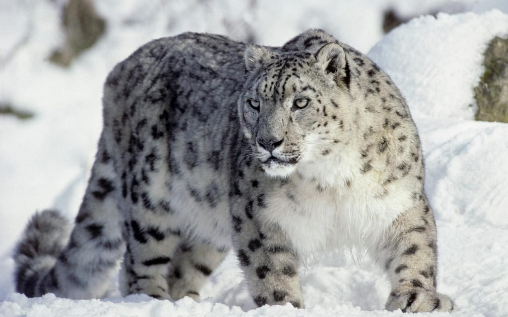

Добро пожаловать!
Кто Ирбисы?
И́рбис, или сне́жный барс, или снежный леопард (лат. Panthera uncia, ранее — лат. Uncia uncia) — крупное хищное млекопитающее семейства кошачьих, обитающее в горах Центральной Азии. Ирбис отличается тонким, длинным, гибким телом, относительно короткими лапами, небольшой головой и очень длинным хвостом. Достигая вместе с хвостом длины 200—230 см, имеет массу до 55 кг. Окраска меха светлая дымчато-серая с кольцеобразными и сплошными тёмными пятнами. В силу труднодоступности местообитания и низкой плотности вида до сих пор остаются малоисследованными многие аспекты его биологии. В настоящее время численность ирбисов катастрофически мала — популяция вида в 2003 году по различным оценкам составляла от 4 до 7 тысяч особей, в 2020 году от 2,7 до 3,4 тысяч. В XX веке он был внесён в Красную книгу МСОП, в Красную книгу России, а также в охранные документы других стран. Охота на снежного барса запрещена во всех странах, где он обитает, снежный барс также внесён в приложение I Конвенции CITES (международный запрет на торговлю исчезающими видами животных и их частями). С 2013 года 12 странами, где обитает снежный барс, принята «Глобальная программа по сохранению снежного барса и его экосистем», предусматривающая специальные меры по его сохранению (борьба с браконьерством, создание особо охраняемых природных территорий, субсидирование фермеров в случае потери домашнего скота от снежного барса и т. д.).
Классификация
- Домен: Эукариоты
- Царство: Животные
- Тип: Хордовые
- Класс: Млекопитающие
- Отряд: Хищные
- Семейство: Кошачьи
- Род: Пантеры
- Вид: Ирбис